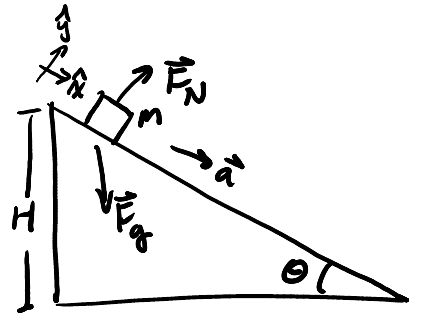
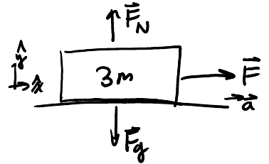
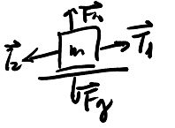

Newton's Laws of Motion
Table of Contents
Newton's laws of motion govern dynamics, which studies forces acting on a mechanical system. These laws must be applied in an inertial frame of reference, which are reference frames with zero acceleration in which objects exhibit inertia. While the surface of Earth is technically not an inertial reference frame due to Earth's rotation, for most purposes it is an adequate approximation and will be treated as such.
1. Newton's 1st Law
Newton's 1st Law, also known as the law of inertia, states that a system keeps constant velocity unless acted on by a non-zero net force. The requirement of constant velocity means that the system maintains the same speed and same direction of motion, or in the case of \(\vec{v}=0\), the system remains at rest.
2. Newton's 2nd Law
Newton's 2nd Law states that for systems with constant mass, the acceleration is proportional to the net force acting on the system:
\begin{align} \boxed{\vec{F}_\text{net} = m\vec{a}} \end{align}3. Newton's 3rd Law
Newton's 3rd Law states that if object \(A\) acts on object \(B\) with force \(\vec{F}_{A/B}\), then object \(B\) acts on \(A\) with an equal and opposite force \(\boxed{\vec{F}_{B/A} = -\vec{F}_{A/B}}\).
4. Solving Problems with Newton's Laws
In general, we can take the following approach to solve problems with Newton's laws:
- Identify the system of interest and list all forces acting on that system.
- Draw a free body diagram showing all of the forces on the system.
- Choose a proper coordinate system with one axis pointing along \(\vec{a}\).
- Decompose forces into components and apply Newton's 2nd Law along each axis.
- Solve for the unknowns.
Example: Block on ramp
Consider a block with mass \(m\) on a ramp with angle \(\theta\) and height \(H\). Assume there is no friction and the block is released from rest:

We would like to find the acceleration and normal force. We have chosen our coordinate axes like above, and drawn the free body diagram. Using similar triangles, we know that the x-component of gravity is \(F_g \sin \theta\), and the y-component of gravity is \(F_g \cos \theta\). Thus, we know that:
\begin{align} F_g\sin\theta &= ma_x \notag \\ mg\sin\theta &= ma_x \notag \\ a &= g\sin\theta \end{align}For the normal force:
\begin{align} F_N - F_g\cos\theta = ma_y &= 0 \notag \\ F_N &= F_g\cos\theta \notag \end{align}Example: Three blocks
Consider three blocks connected to each other with ideal strings and the first is pulled with known force \(\vec{F}\). Assume that there is no friction against the table. We want to find the acceleration of the system of three blocks as well as the tension in the strings in between each of the blocks.
Since all blocks move with the same acceleration, we can determine this by lumping all three blocks into a big system:

There is no acceleration in the vertical direction as the block remains in contact with the table. As for the horizontal direction, by Newton's second law we have:
\begin{align} \vec{F}_\text{net} &= m\vec{a} \notag \\ F &= 3ma \notag \\ a &= \frac{F}{3m} \notag \end{align}Now, for the tension in the string between each block. For block 1:

The tension here, \(\vec{T_1}\), can be found using Newton's second law:
\begin{align} F - T_1 &= ma \notag \\ F - T_1 &= \frac{F}{3} \notag \\ T_1 &= \frac{2F}{3} \notag \end{align}Similarly, for the second block:
And, by Newton's second law:
\begin{align} T_1 - T_2 &= ma \notag \\ \frac{2F}{3} - T_2 &= \frac{F}{3} \notag \\ T_2 &= \frac{F}{3} \notag \end{align}